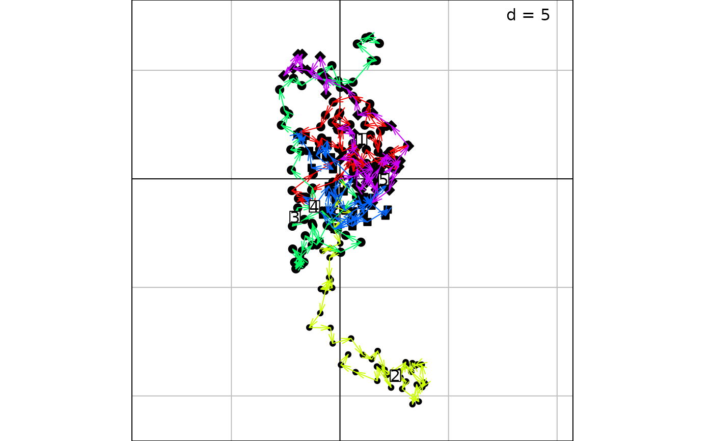
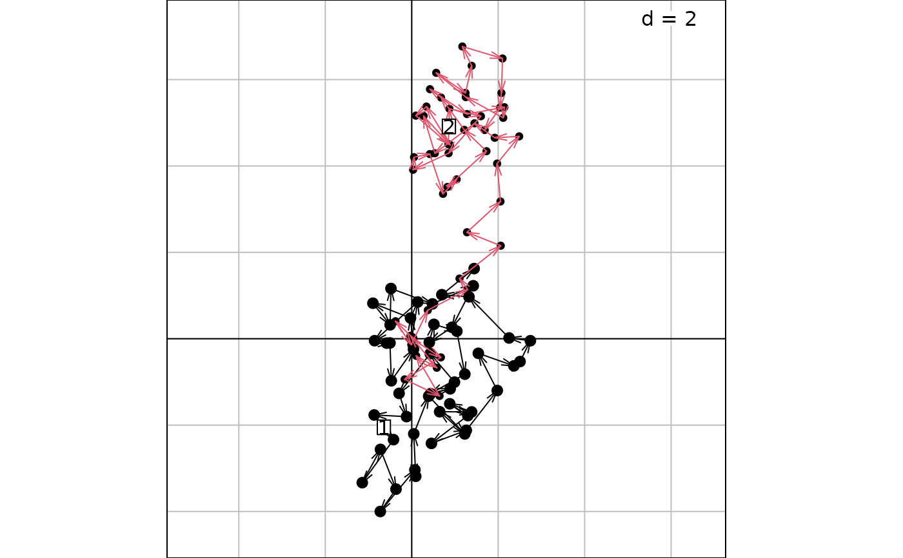

2-D scatter plot with trajectories
s.traject.RdThis function represents a two dimensional scatter plot with trajectories.
Arguments
- dfxy
a data frame used to produce the plot
- fac
a factor (or a matrix of factors) splitting the rows of
dfxy- order
a vector containing the drawing order of the trajectories. A vector of length equal to factor.
- labels
a vector of character strings containing the trajectories' labels
- xax
an integer (or a vector) indicating which column(s) of
dfxyis(are) plotted on the x-axis- yax
an integer (or a vector) indicating which column(s) of
dfxyis(are) plotted on the y-axis- col
a color or a colors vector to color points, labels and lines
- facets
a factor splitting the rows of
dfxyso that subsets of the data are represented on different sub-graphics- plot
a logical indicating if the graphics is displayed
- storeData
a logical indicating if the data should be stored in the returned object. If
FALSE, only the names of the data arguments are stored- add
a logical. If
TRUE, the graphic is superposed to the graphics already plotted in the current device- pos
an integer indicating the position of the environment where the data are stored, relative to the environment where the function is called. Useful only if
storeDataisFALSE- ...
additional graphical parameters (see
adegparandtrellis.par.get)
Details
The fac factor is used to display several trajectories: each level of fac is a specific trajectory.
Value
An object of class ADEg (subclass S2.traject) or ADEgS (if add is TRUE and/or
if facets or multidimensional fac or vectors for xax/yax are used).
The result is displayed if plot is TRUE.
Author
Alice Julien-Laferriere, Aurelie Siberchicot aurelie.siberchicot@univ-lyon1.fr and Stephane Dray
Examples
rw <- function(a) {
x <- 0
for(i in 1:49) x <- c(x, x[length(x)] + runif(1, -1, 1))
x
}
x1 <- unlist(lapply(1:5, rw), use.names = FALSE)
y1 <- unlist(lapply(1:5, rw), use.names = FALSE)
z1 <- gl(5, 50)
g1 <- s.traject(data.frame(x1, y1), z1, ppoints.pch = 19:23, plines.col = rainbow(5))

x2 <- unlist(lapply(1:2, rw), use.names = FALSE)
y2 <- unlist(lapply(1:2, rw), use.names = FALSE)
z2 <- gl(2, 50)
g2 <- s.traject(data.frame(x2, y2), z2, ppoints.pch = 21:20, plines.col = 1:2)
